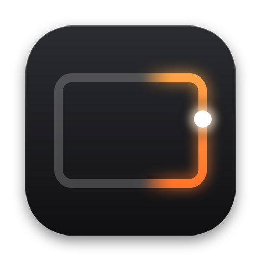
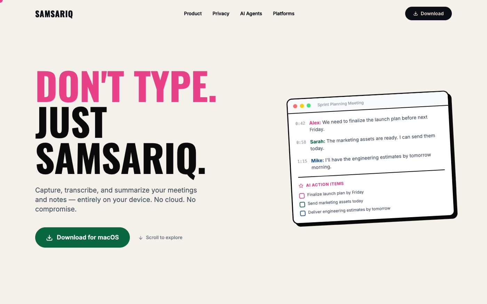
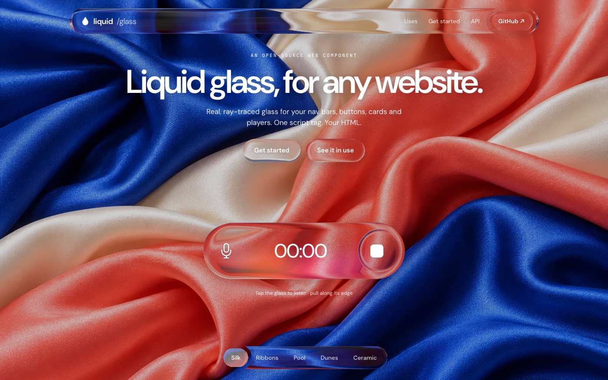
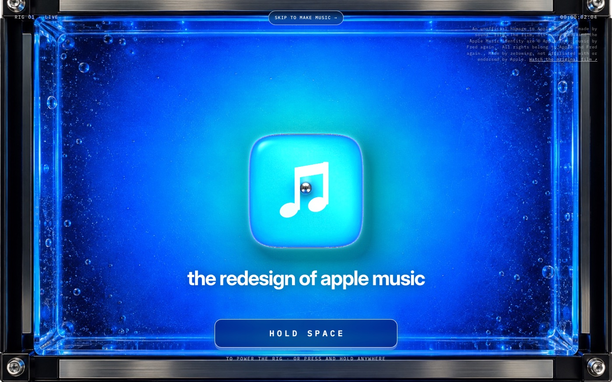
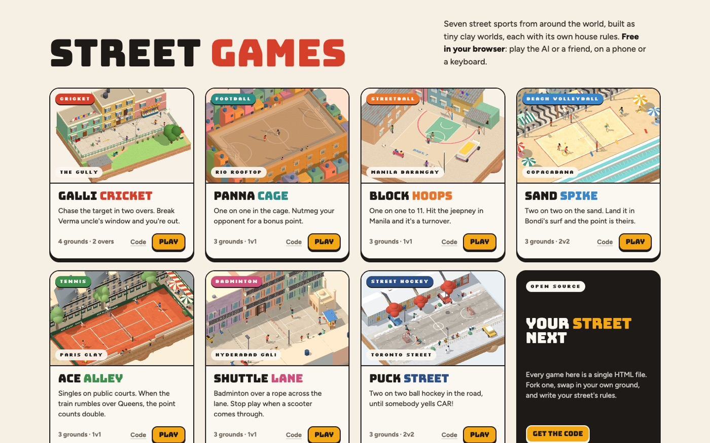
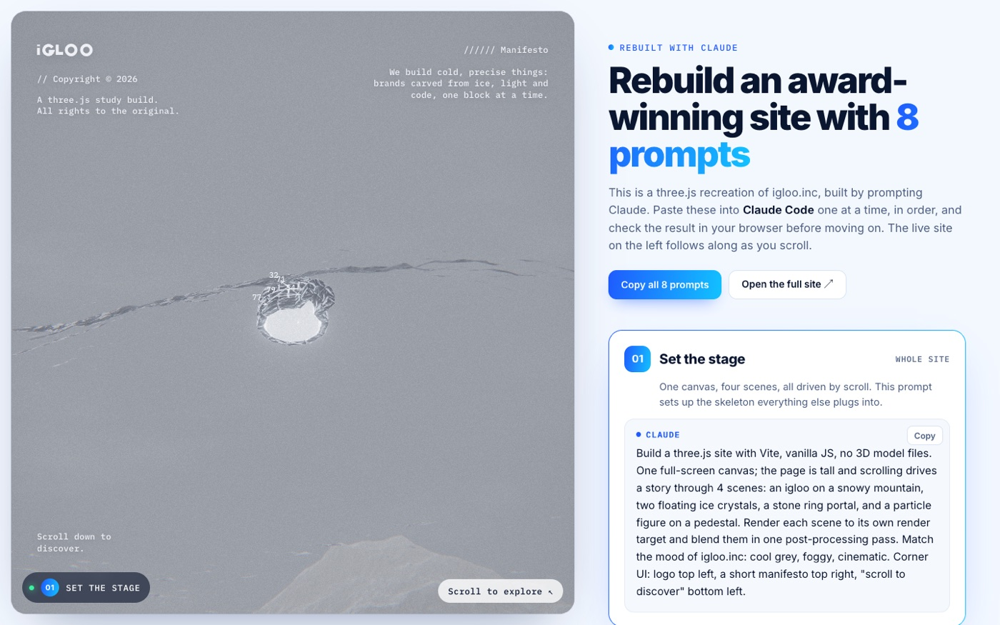

Volume
Right edge · slide
Up is louder. The display fills in sixteen steps, the same one your volume keys show.

Brink DownloadA free menu bar app for macOS
Slide them for volume, brightness and key light. Swipe the bottom to skip a track.
Free · macOS 13+ · Apple silicon & Intel
Four edges, four controls
Right edge · slide
Up is louder. The display fills in sixteen steps, the same one your volume keys show.
Left edge · slide
The screen follows your finger, with the sun you know from the brightness keys.
Top edge · slide sideways
Left dims the keyboard backlight. Right brings it back up.
Bottom edge · swipe / Corners · double-tap
Swipe the bottom edge to skip a track. Double-tap the top-right corner to mute, or give any corner its own job. Double-tap the bottom to play or pause, if you switch it on.
Drag an edge to try it
The whole trackpad
Slide the edges for brightness, volume, keyboard light and music. Double-tap a corner for one of eleven things you pick.
How it feels
Every step taps back under your finger. Off, Light, Medium or Strong.
Hold ⇧⌥ while you slide and each step splits into four. Precise Sliding makes it the default.
Slide an edge and the cursor waits exactly where you left it.
Let a slide start anywhere on the edge, or only in the bottom ¾, half or quarter.
Brightness on the right and volume on the left, if that suits your hands.
Only slide while a key is held, so a resting thumb never changes a thing.
Also Magic Mouse support Light & Dark Liquid-glass panel Open at Login Updates install themselves
Every feature. No account, no trial, nothing to unlock.
Download for MacmacOS 13 or later · Universal · Signed and notarized by Apple
Changelog
FAQ
Brink changes volume and brightness by posting the same media keys your keyboard sends, and it holds the pointer still while you slide. macOS only allows both with Accessibility access. Nothing leaves your Mac.
Yes. Brink works with any multitouch trackpad, built in or external. There is a Magic Mouse mode too, which listens along the sides of the mouse.
Yes. Only a slide that starts inside the thin edge strip counts. Taps, clicks and scrolling behave as usual. If you still catch it by accident, narrow the edge width, limit the Active Area or require Fn or ⌥.
Yes. Every feature, no account and no trial. Download the disk image, drag Brink to Applications and it updates itself from then on.
Any Mac on macOS 13 Ventura or later. It is a universal app for Apple silicon and Intel, signed and notarized.
Brink is written in Rust on Tauri by Zerowing Studios, so it stays small and light. Builds are published on GitHub.
Index




